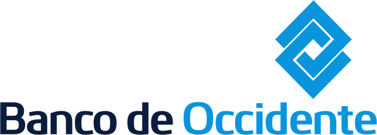

Historia y comparación
¿Qué cambió y cómo lo resolvieron otros países?
Qué ha cambiado en la regulación laboral y cómo nos comparamos con otros países de la región.
20 años de López & Asociados
Ideas que inspiran el futuro laboral y empresarial
Una jornada de conversaciones prácticas sobre la historia de la regulación laboral, la política pública que viene y cómo prepararnos.
20 años acompañando las relaciones laborales del país
En el marco de la celebración de nuestros 20 años, presentamos Summit 2026, un encuentro único de análisis y visión sobre el futuro del mundo laboral.
Nos reuniremos para conversar sobre los desafíos, tendencias y oportunidades que están marcando la agenda laboral, junto a nuestros socios y reconocidos expertos nacionales e internacionales.
Un espacio para compartir perspectivas, generar conversaciones relevantes y explorar las transformaciones que están dando forma al futuro del trabajo.
Del camino recorrido a lo que viene, y de ahí a las decisiones que hoy le corresponden a cada empresa.
¿Qué cambió y cómo lo resolvieron otros países?
Qué ha cambiado en la regulación laboral y cómo nos comparamos con otros países de la región.
¿Qué prioridades debe tener la política laboral que viene?
Las prioridades para construir la política laboral que viene, con voces de la academia, los sindicatos y el sector privado.
¿Qué puede hacer hoy su empresa?
Las decisiones prácticas que las empresas pueden tomar hoy: contratación, cumplimiento, negociación colectiva y proceso judicial.
Ocho conversaciones entre las 8:40 a.m. y las 5:15 p.m. Abra cada sesión para ver el resumen y quiénes participan.
Entrega de escarapelas y apertura del Summit 2026, donde se explicará el sentido de la jornada y la agenda del día.
Apertura: Juan Pablo LópezLas nuevas reglas de contratación laboral directa, cuidados y mejores prácticas.
Diferencias y formas de contratación laboral bajo la Ley 2466 y los riesgos de los contratos a término fijo, indefinido y por obra o labor para 2026-2027, con mejores prácticas por sector (financiero, retail y petróleos). Incluye el régimen de profesores (art. 101), los turnos de trabajo y las jornadas laborales.
Marco legal de la tercerización en Colombia: diferencias entre intermediación y tercerización, y qué constituye actividad permanente. Estadísticas de contratación a través de terceros, visitas y competencias del Ministerio de Trabajo, outsourcing y BPO, y cómo contribuir a más empleo formal. Con perspectiva comparada de Chile y Argentina.
Marco legal de las opciones de trabajo a distancia, como el teletrabajo, y una explicación general de trabajo en casa, trabajo remoto y nómadas digitales. Análisis del impacto en el ambiente laboral, con los aspectos positivos y negativos de su implementación.
Revisión de la jurisprudencia relevante para los clientes: justas causas de terminación, el nuevo código y otras decisiones clave. Con imágenes y gráficos para facilitar la comprensión y una mirada optimista sobre las buenas prácticas.
Invitación de López & Asociados.
Conversación sobre las prioridades y los desafíos para construir la política pública laboral del país, con expertos desde distintas perspectivas: la academia, el sector sindical y el sector privado.
Obligaciones empresariales en debida diligencia y derechos humanos, marcos normativos aplicables y mejores prácticas de cumplimiento. Capítulo especial sobre acoso laboral y acoso sexual: política de cero tolerancia, qué debe contener la documentación interna, debida diligencia frente a trabajadores en posiciones de poder y cómo crear ambientes de conversación abierta, con reglas claras sobre conflictos de interés e información confidencial.
Balance de la negociación colectiva en 2026, con foco en la negociación multinivel y los acuerdos marco sectoriales: qué pasó con los pliegos presentados, cómo se desarrollaron los procesos y qué aprendimos. Perspectivas para 2027 y cómo trabajar en escenarios de confianza con las organizaciones sindicales.
Cambios en materia procesal laboral y medidas que las compañías deben tomar para prepararse antes de un proceso judicial. Un enfoque práctico y sencillo sobre dónde están los cambios y qué acciones implementar.
Participan líderes de

Complete el formulario y nuestro equipo confirmará su inscripción al Summit 2026 de López & Asociados.
Los campos con * son obligatorios.